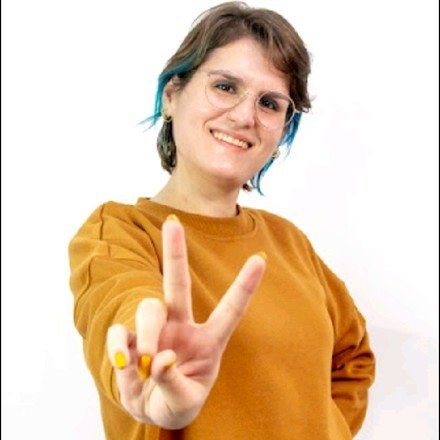
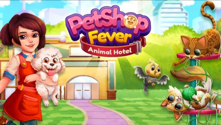
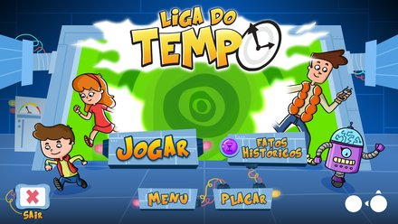
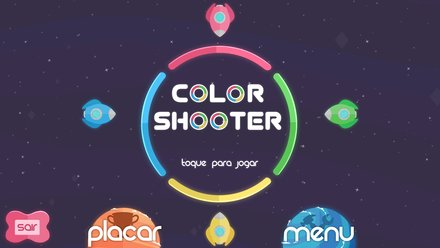
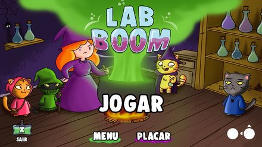
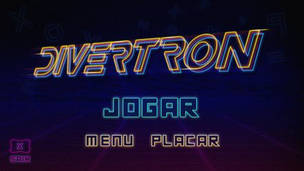
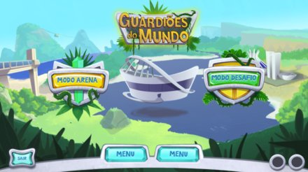

I design the mechanics and systems that give a game its intended emotional experience.
Eleven years in game design, 10+ shipped titles, from first concept to launch. I work in-engine in Unity, iterate through playtests, and design around how the player should feel. Drawn to narrative-driven and immersive experiences.

Blumenau, BrazilSelected work
Mechanics · systems · narrative
Pet Shop Fever view project →
A live time-management game where players build and grow a chain of pet shops across several worlds. I write the game's narrative — LiveOps event storylines, in-game dialogue and copy, and the arcs that connect its worlds — and design the features that carry players between sessions: collection systems, daily challenges, and minigames. I also own the economy that ties those systems together, tuned through continuous playtesting and A/B testing.

Evolution Galaxy: Mutant Merge view project →
A merge and collection game where players combine species to evolve new life forms and expand across planets. I design and balance the systems that gate merging, unlocking and speed-ups, model how quickly collections fill for new and veteran players, and re-pace the progression curve every time new content ships.

Vlogger Go Viral view project →
An idle game about growing a video channel from a bedroom setup to an automated media operation. I tune the exponential curves behind views, income, upgrade costs and prestige so growth feels fast early and still means something a hundred hours in, and pace content unlocks around short sessions and offline time.

My Boo view project →
A long-running virtual-pet game with a daily care loop, minigames and seasonal events. I design the daily reward cycle that brings players back, pace the customization catalogue so there is always an aspirational next goal, and build seasonal, themed events into the LiveOps calendar.
Concepts & prototyping
Internal pitches · game jamsAlongside live-game work I regularly prototype and pitch new concepts in short sprints and game jams — a quick playable build in Unity, a design doc, and a pitch. A few I've taken from idea to prototype:
Letter dungeon crawler
A roguelike dungeon crawler where you fight ghosts by forming words from letter tiles — the better the word, the stronger the attack — to survive each floor and descend.
Katamari-style renewal
A rolling, accretion-based game reframed around renewal: instead of hoarding junk, you sweep through a run-down place and rebuild it as you grow.
The commander who wanted to cook
A kitchen-dash game led by a feared galactic commander whose secret dream is to be a head chef. The comedy — and the design — live in the gap between his reputation and his apron.
Fighting fate
A card battler where the opponent isn't a monster but a fate: every match is an attempt to spare a victim from a grim destiny, and the deck is how you argue with it.
How I work
Prototype first, playtest alwaysConcept
References, a core fantasy, and the feeling I want the player to leave with. On paper before it's in code.
Prototype
A quick playable build in Unity to find out whether the core actually feels the way it should.
Design & iterate
Mechanics, systems, levels and content — documented and tuned in-engine with the team.
Playtest
Sessions with real players. The design bends to what they need, not the other way around.
Narrative & impact
Design is about how the player feels, not only what they do. I write narrative for a live game today (Pet Shop Fever), and I've been building games with an explicit emotional or educational goal since Playmove — games for children, games for impact, playtested with the people they were made for.
In 2018 I spoke at BIG Festival, Brazil's largest games event, on narrative, gameplay and game design for games for impact.
Experience
Game Designer
Design mechanics, tutorials, features and narrative for live F2P games across idle, merge, time-management and virtual-pet genres. Work in-engine in Unity; prototype and pitch new game concepts in sprints and game jams; run playtests; and own the economy and progression systems. A/B testing and market benchmarks validate the design decisions.
Game Designer
Core mechanics and level design for hypercasual mobile games; technical specs and in-engine support for the dev team through implementation.
Game Designer & Illustrator
Game-design contracts alongside illustration for published children's books.
Game Designer
More than ten educational games taken from concept to launch on a proprietary tablet platform: mechanics, level design, difficulty balancing, and playtesting with the target audience. Player-centred, iterative design throughout.
Earlier games
Playmove · 2015-2019The first place I designed around an explicit learning and emotional goal — and playtested every build with the children it was made for.




